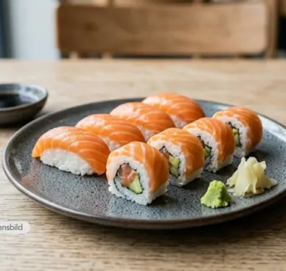
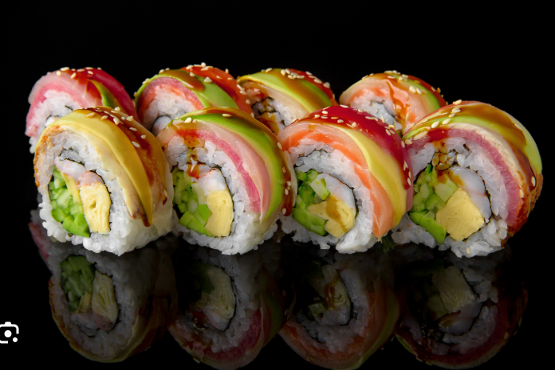
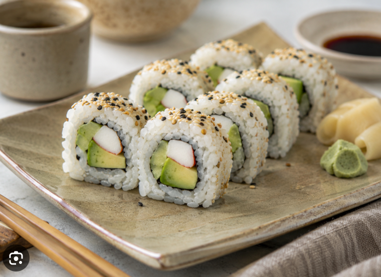
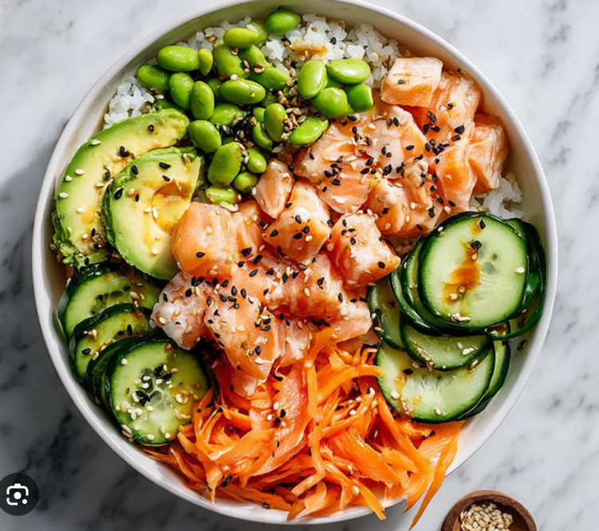
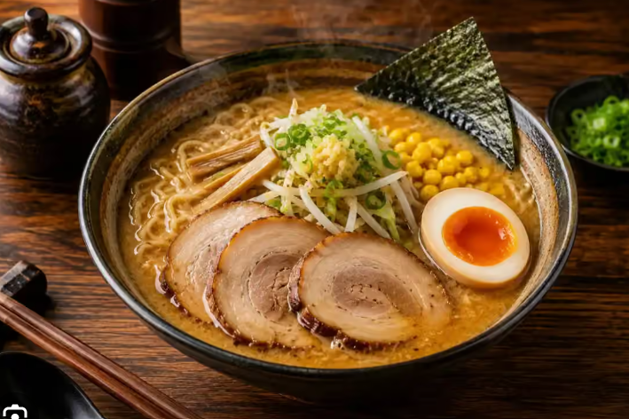
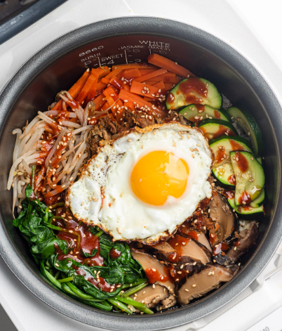

Osaka Sushi & Wok
Sushi, japansk mat och wok
25–40 min

Crazy lax
Ris, lax och krämig topping med smakrika tillbehör.
129 kr

Rainbow roll
Rullar med ris och fyllning, toppade med olika sorters fisk.
139 kr

Kalifornia roll
Ris, avokado, gurka och crabstick i en klassisk sushirulle.
119 kr
Mala HotPot Bowl
Asiatiska bowls, ramen och smakrika rätter
25–40 min

Lax bowl
Ris med lax, avokado, gurka, edamamebönor, morot och en smakrik sås.
139 kr

Miso ramen
Japanska nudlar i smakrik misobuljong med grönsaker och topping.
129 kr

Bibimbap bowl
Ris med grönsaker, ägg och smakrik koreansk sås.
135 kr